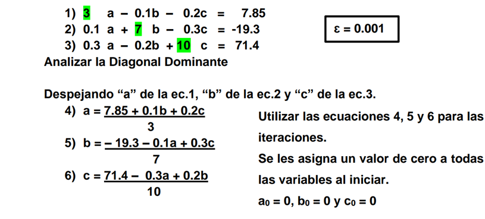
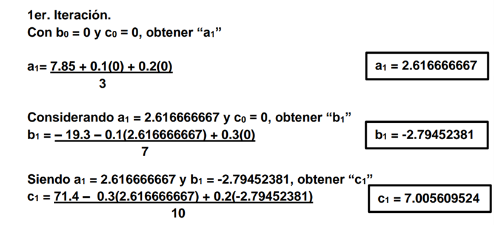
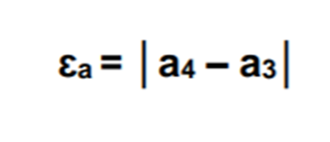
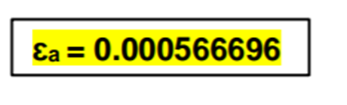

Introducción
El método de Gauss-Seidel es una técnica iterativa para resolver sistemas de ecuaciones lineales. Es una mejora del método de Jacobi y se usa ampliamente debido a su mayor velocidad de convergencia en comparación con Jacobi.
Ventajas
- Converge más rápidamente que el método de Jacobi debido a la utilización de los valores más recientes de las variables.
- Es relativamente sencillo de implementar en algoritmos computacionales.
- No necesita almacenar las matrices de coeficientes, solo el vector de solución.
Desventajas
- Menos adecuado para paralelización comparado con el método de Jacobi, ya que cada cálculo depende del anterior dentro de la misma iteración.
- Requiere que la matriz del sistema sea estrictamente diagonalmente dominante o simétrica y definida positiva para garantizar la convergencia.
Explicación del Método
-
Analizar la diagonal dominante
En este primer paso tenemos que despejar a de la ecuación 1, b de la ecuación 2 y c de la ecuación 3.
Estas ecuaciones las llamaremos 4, 5 y 6.
-
Comenzar las iteraciones
En este paso calcularemos A1, utilizando la ecuación 4 en la cual sustituimos b0 y c0 con un 0.
Al obtener el valor de A1 seguimos a calcular B1 con la ecuación 5, en la cual sustituimos con A1 y C0. Hacemos lo propio con C1 utilizando la ecuación 6 con A1 y B1.
-
Calcular el error
El siguiente paso es calcular el error para las 3 variables (a, b y c). Para hacerlo simplemente le restaremos al valor calculado el valor con el que hicimos los cálculos.
En esta primera iteración sería A1 - A0 para el caso de la variable a. El error tiene que ser .001 al menos, de lo contrario volvemos a iterar usando el proceso del paso 2.
-
Encontrar el resultado final
Al encontrar en las 3 variables un factor error de .001 terminaremos nuestro proceso, ya que habremos encontrado nuestros resultados deseados.

Video explicativo
Practica